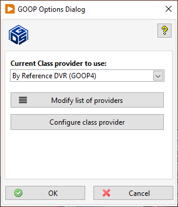

Click on the green tools button or use the Tools menu and select GOOP>>Class Provider Options...
With this dialog you can change the current class provider to be used when you create new classes.
Dialog Box Options
|
Current Class Provider to use: |
Select a provider to use: LabVIEW Native, Endevo GOOP 3 or Endevo GOOP 4. |
|
Configure class provider |
This button allows you to configure the provider selected in Current Class Provider to use:. |
